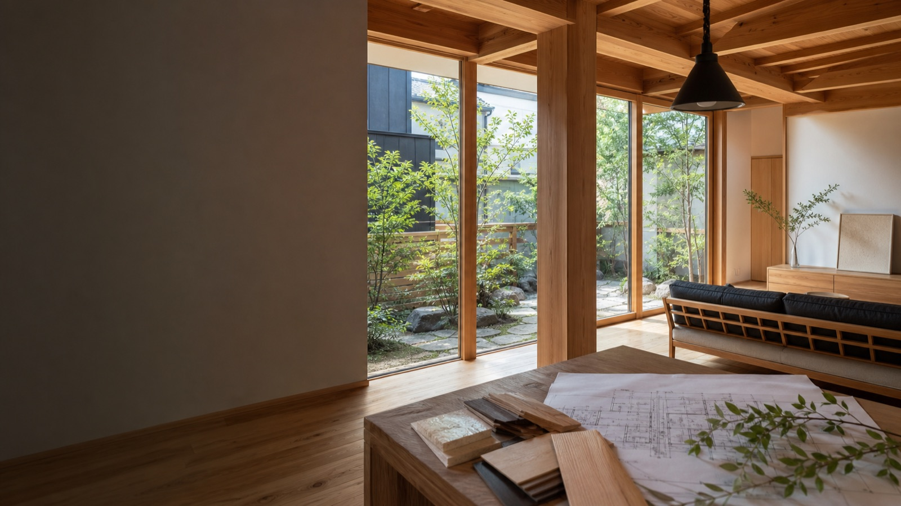

一級建築士と進める設計提案
見た目だけでなく、動線・採光・構造・予算まで含めて住まいを考える姿勢を訴求します。

Proposal point
既存サイトの強みである対応領域の広さと建築士の専門性を活かしながら、 住宅向けの導線、施工事例、問い合わせCTAをページ上部に整理する案です。
事業の幅は伝わる一方で、家づくりを考え始めた人が見るべき導線がやや深く、相談への心理的距離が残りやすい。
トップ直下に「新築」「古民家・改修」「店舗・施設」の入口を置き、施工事例と相談の流れへ自然につなげる。
一級建築士在籍、岡山密着、住宅から公共建築まで対応できる安心感を、初回接点で端的に見せる。
Entrances
トップページで最初に整理するのは、閲覧者自身が「自分の相談に近い」と感じる入口です。
Reasons
見た目だけでなく、動線・採光・構造・予算まで含めて住まいを考える姿勢を訴求します。
地域の気候、敷地条件、家族構成に合わせた提案ができる身近さを前面に出します。
施工領域の広さを信頼材料に変え、技術力と対応力を初回接点で伝えます。
Works
写真・設計意図・こだわり・工期の目安をセットで見せると、閲覧者が自分の計画に置き換えやすくなります。
自然素材の質感、庭とのつながり、家族の動線を見せる代表事例枠。
残す価値と暮らしやすさの両立を伝える改修事例枠。
住宅以外の対応力を、信頼補強として見せる事例枠。
Flow
家づくりの希望、土地、予算、時期を整理。まだ未定の段階でも相談可能に見せます。
敷地や建物の状態を見ながら、暮らし方と条件に合う方向性を検討します。
プラン、素材、費用感を共有し、納得して進められる判断材料を整えます。
工事中の確認や変更相談にも対応し、完成後の暮らしまで見据えて伴走します。
Company
会社紹介では、所在地や対応領域だけでなく「どんな相談を歓迎しているか」を具体化し、 初めての問い合わせのハードルを下げます。
FAQ
候補地の見方、予算の組み方、希望する暮らしの整理から相談できる見せ方にします。
新築だけでなく、建物の状態に合わせた改修相談にも対応できる導線を用意します。
住宅以外の実績を入り口として出し、事業者からの相談も受け止めます。
希望、予算、土地資料、今の困りごとなど、相談時にあるとよい情報を簡潔に案内します。